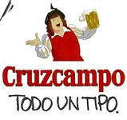
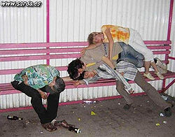
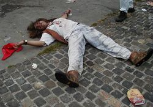
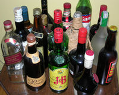

Alquimia alcohólica
 De: La Frikipedia, la enciclopedia extremadamente seria.
De: La Frikipedia, la enciclopedia extremadamente seria.

|
Este artículo participa del Certamen de Adopción, así que mientras tenga esta plantilla no lo toques porque sino este gatito se enojará contigo.
|
| De la serie ciencias naturales y sociales:
|
| Alquimia alcohólica
|
| 
|
| Beber en caso de emergencia
|
|
| Año de creación
|
Nacimiento de Jesucristo
|
| ¿Sigue en uso?
|
Aunque impere la ley seca
|
| ¿Que estudia?
|
Alcohol
|
| Científicos que la practican
|
Borrachos contamos mal
|
| Gente "normal" que la practica
|
Todos los alcohólicos
|
| Nivel de frikismo
|
Ultramegahiperpantasónico
|
¿Para que coño sirve?
|
Para muchas cosas
|
| Dificultad
|
Tan fácil como mover líquidos de un recipiente a otro
|
| Máximo exponente
|
Peter Griffin o Homer Simpson
|
| ¿Es recomendable?
|
Prueba-lo colega, esta buenísimo
|
«Bienaventurados los borrachos, ellos verán doble a Dios.»
~ Profetas del Alcohol
«Mira niña, yo bebo lo que me sale del coño»
~ Massiel a Tamara Yurena
«Por el alcohol, causa y solución de todos nuestros problemas»
~ Homer Simpson sobre el alcohol
«Alcohol, alcohol, alcohol alcohol alcohol, hemos venido a emborracharnos, el resultado nos da igual!»
~ IP anónima sobre el alcohol
«Déjame beberme el queroseno del avión, que se acabó el alcohol»
~ Melendi en el avión de Perdidos
«En la variedad está el gusto»
~ Borracho alquímico
 Alquimistas después de un experimento fallido
Es la madre de las ciencias del experimentación, es decir, mezclar con la esperanza de crear una nueva receta. Los entendidos en la materia llaman a estas recetas "cócteles".
 Otro experimento fallido por usar vino de garrafón
Historia
La alquimia alcohólica tiene origen el el Antiguo Egipto, gracias a que Cleoputapatra mandaba a sus subordinados que le mezclaran todo tipo de bebidasCerveza,Tequila,Alcohol 96 antes de empezar su ronda casi interminable de felaciones.
Esta ciencia fue retomada por CarlosArguiñanoMagno"Carlomagno", el cual bebió demasiado, hasta el punto de alucinar con orgias extrañas invasiones de canis,emos y pijos otros y cosas así, además de empezar a echar la pota balbucear en el suelo cosas sin importacia y ridiculas ininteligibles para los mortales, que al parecer eran estupideces de borrachos profecías, lo cual le dio una prueba a los científicos de los poderes sobrenaturales de la Alquimia Etílica, que después del trajín fue llevada al país en el que tuvo su mayor desarrollo: Escocia
En Escocia la Alquimia Etílica tuvo bastante aceptación como ciencia, y es, hasta el momento, la única ciencia que se permite estudiar allí. En este país le dieron un nombre a lo que producían, tomando en cuenta que Johann Mechupa 'Lpito (se pronuncia Yojan Michoupei Elpaitou), el inventor del Baileys con fetiche, que consistia en coger un gallo (en inglés 'cock') y chuparle la cola (en inglés 'tail'). Al preguntarle a Johann cómo sabía su brebaje, Johann respondió "es como chuparle la cola a un gallo", dándole así el nombre Cocktail, nombre bastante Pijo.

Un sacrificado civil probando un experimento

Alquimista dedicado a su labor
Ingredientes/Recetas
- Un punto importante para los alquimiocolicos han sido los ingredientes y mezcla de estos.
- Muchos de estos ingredientes se consiguen en las regiones Hoen, Jotto, y todos los demás mapas de [pokémon], se recolectan de los árboles una serie de bayas alucinogenas que ademas contienen diferentes tipos de venenos que causan colapsos en diferentes partes del cuerpo, produciendose convulsiones que dan origen a bailes como el tektonik y el brekdans.
- Tras numerosos estudios de cientificos alemanes e irlandeses, se han establecido una serie de formulas para conseguir brebajes alcoholicos, estos son sus axiomas:
- Los grados de los mismos alcoholes se suman. Por ejemplo, si mezclamos 'x' cantidad de wiski de 39° con 'y' cantidad de wiski de 41° obtenemos una cantidad x+y de (x•39+y•41)/(x+y)°.
- Los grados de diferentes alcoholes se multiplican. Por ejemplo, 'x' cantidad de wodka 30° con 'y' cantidad de ron 30° daria una cantidad x+y de 30•30.
- El alcohol destilado mezclado con el fermentado, da asco.
- La norma más importante, la de medición de la resaca, tras muchos intentos fallidos de encontrar una fórmula que pudiera predecir la resaca con certeza, tras millones de años de investigacion en el futuro John Connor envió a su robot alcoholineitor al pasado para ahorrarnos ese tiempo de espera, aquí la ecuación: R = L elevado a ∞ ( Donde R es el nivel de resaca y L los litros de alcohol ingeridos.
Grandes figuras de la Alquimia Etílica
- Nicolas Flamel: En sus estudios por la Piedra Filosofal, dejó varios descubrimientos interesantes, como el 'Elixir contra la Resaca' (Cuya receta, desgraciadamente, se ha perdido), aparte de acuñar el término 'On the Rocks'
- Doctor Jekyll: Descubrió un cóctel el qual tomándolo una vez por noche te colocaba de una manera que parecia que te habias acabado veinte litros de alcohol 100°.
- Los vendedores de pociones del Zelda, artistas creando mezclas que confieren un estado de ánimo que te hace pensar que has recuperado salud o que tienes poderes mágicos.
- Piter Grifo(Family Guy®): Se bebió una fábrica entera de alcohol.
- Jomer Simplón(The Simpsons©): La taberna de Moe tiene récord de ganancias cada vez que va Omar Simpson. Todo debido a superpoderes radioactivos que ganó al beberse toneladas de uranio enriquecido de la central. También es el inventor del flameado de Moe.
- IP anónima: Hasta en el biberón bebía alcohol.
Asnor empezó siendo alquimista
Usos a través de la Historia
Usos en la guerra
El alcohol en la guerra se podía usar me muchas maneras, a saber:
- Analgésico. Se bebía en grandes cantidades para no sentir los dolores causados por las armas.
- Arma explosiva. Se podía prender un trapo usado enganchado a la botella, luego al lanzarla ya sabes lo que pasa.
- Envenenamiento. Un ejemplo era el que hacían tropas inglesas con los prisioneros rusos. Los rusos bebian vozdka, que contiene poco mas de 30° y los ingleses les cambiaban el vodka por ginebra, de más grados de alcohol, y los rusos se intoxicaban más rápido y morian, ya que estaban acostumbrados a beber vodka rápidamente.
Usos en la actualidad
La verdadera alquimia lleva a cabo sus progresos en el botellón, donde los ilustres borrachos demuestran sus habilidades.
Estos científicos suelen ser gente incomprendida, incluso sus acompañantes les dan la espalda al ver una copa arco iris, o huyen directamente al escuchar un "Prueba, pueba... ¡Está bueno!".
Pese a esto, las aportaciones de esta práctica a la humanidad han sido numerosas:
 descubrimientos de los alquimistas
- El baileys con calimocho cura la piedra de riñón, y viene de perlas si estás haciendo obras en casa y te quedas sin cemento.
- vodka mezclados en proporciones adecuadas forman un potente explosivo.
- Un refresco cualquiera con un chorrito de alcohol metílico (por ejemplo, tinta de impresora) es un potente afrodisiaco.
- Las bebidas blancas ingeridas junto las bebidas negras combaten el racismo.
- La mayor parte de las mezclas cura la sed.
- Antes se decía que ciertas mezclas de alcohol podían dejar ciego. Recientes estudios lo han confirmado
- Esos mismos estudios han descubierto mezclas que provocan la pérdida de los otros 4 sentidos, e incluso de sentidos que no conocíamos (gracias a ello se desarrolló la parapsicología)
- Esos mismos estudios (no tenían nada mejor que hacer, como puede verse), descubrieron que al mezclar esas bebidas, el bebedizo resultante curaba cualquier enfermedad conocida y por conocer, te rellenaba las barras de vida y maná y subía el Espíritu y el Carisma en 20 puntos... pero causaba la muerte a la media hora.
|
|
 Alcohol Alcohol 
 Drogas Drogas
 Elementos Químicos Elementos Químicos
 Productos de Limpieza Productos de Limpieza 
|
Autor(es):
- Fordus
- Doctor grijander
- Max Slug
- Frikiman
- DVDL
- Z
- Chris muskha
- Calico
- ElInventor2
- Frikisexigirl!!!
Frikipedia 2005-2016, Licencia
GFDL 1.2 - Extraído por FrikiLeaks